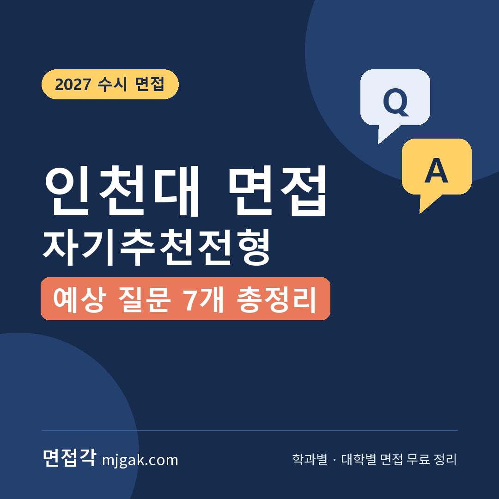
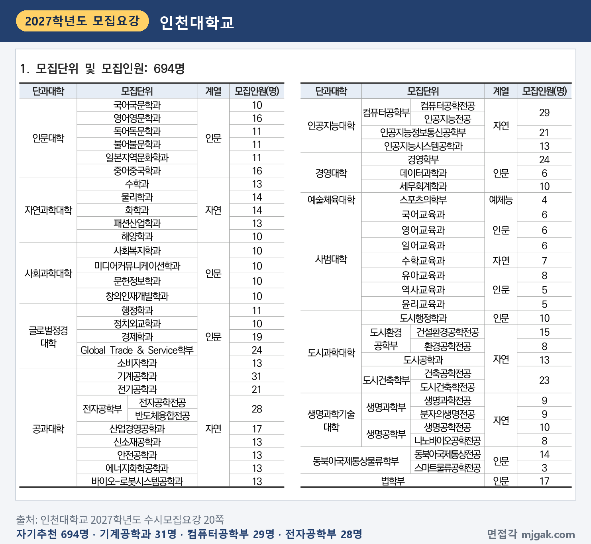
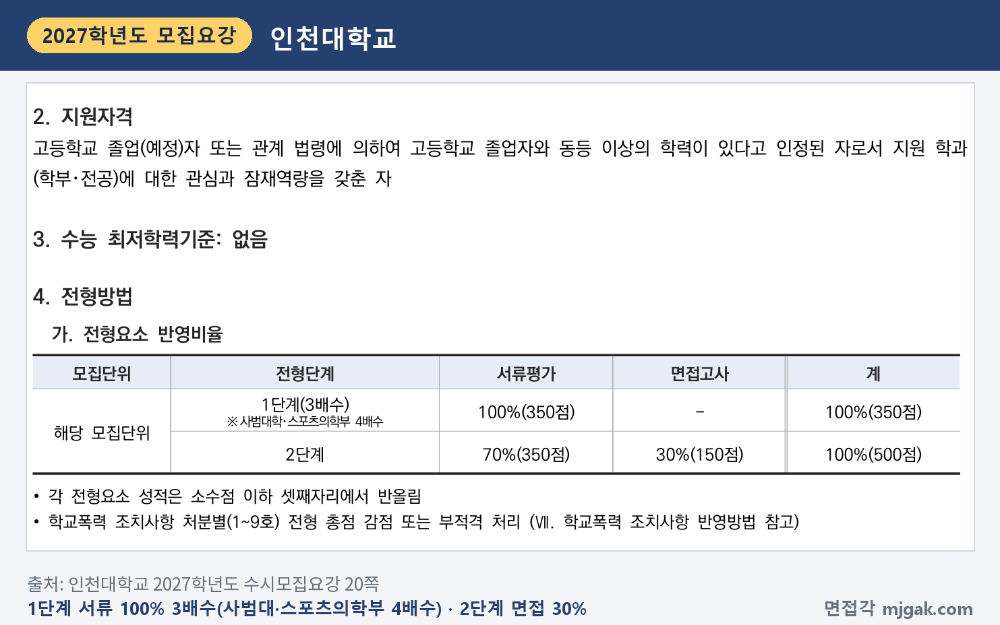
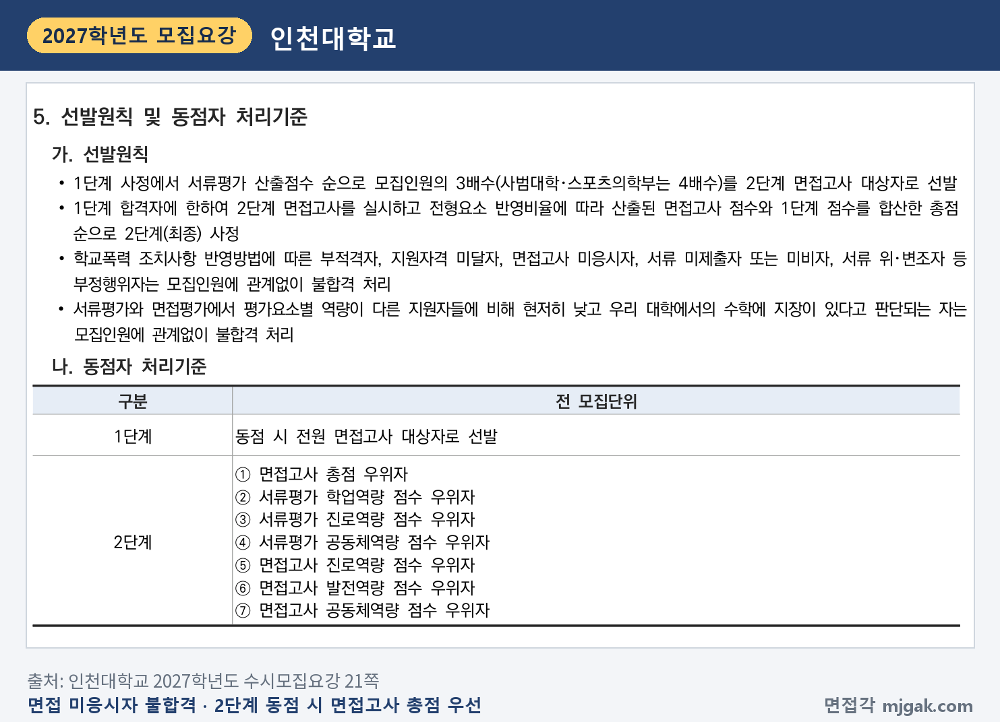
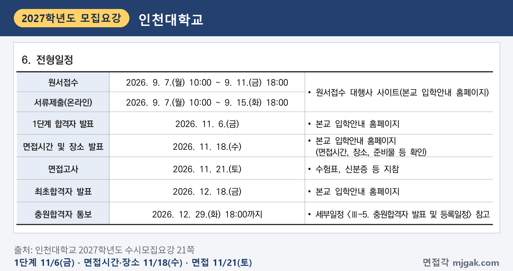
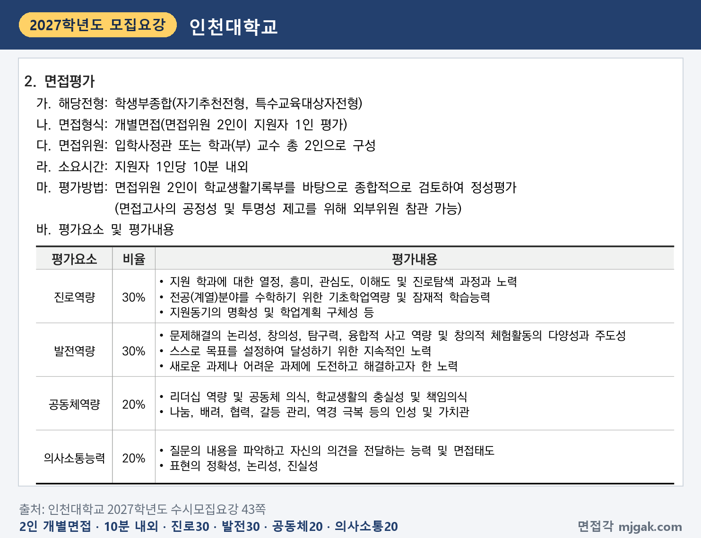
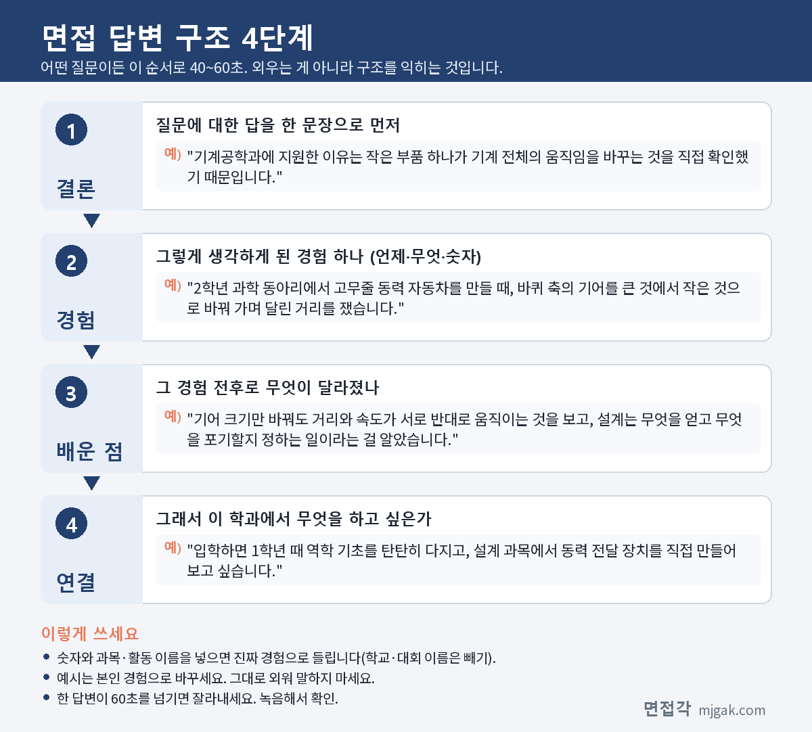
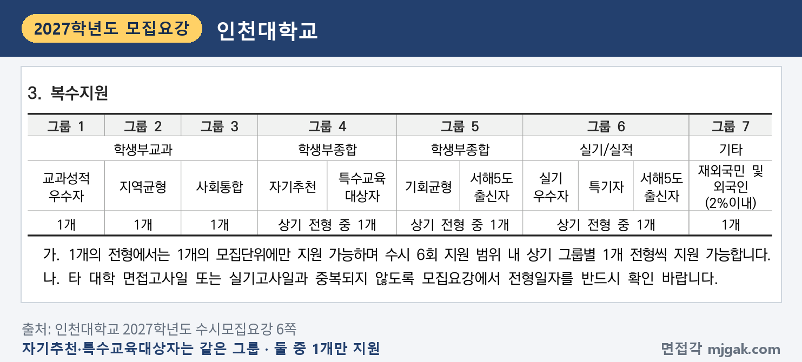

Ctrl+V (서식 유지됨)제목
본문 (이 영역 전체가 복사됩니다)
📷 여기에 이미지 넣기 — 썸네일 — thumb-incheon.png (대표 이미지로 지정)
인천대 자기추천전형에서 먼저 챙길 것은 날짜 순서입니다. 1단계 합격자 발표는 수능 전인 11월 6일(금)이고, 면접은 수능(11월 19일(목)) 이틀 뒤인 11월 21일(토)입니다. 면접시간과 장소는 11월 18일(수)에 입학안내 홈페이지에서 발표합니다. 2단계는 1단계 성적 70%와 면접 30%를 합산하고, 면접은 면접위원 2인이 지원자 1인을 10분 내외로 보는 개별면접입니다. 수능최저학력기준은 없습니다. 인천대학교 2027학년도 수시모집요강을 바탕으로 전형 방법과 일정, 면접 방식, 예상 질문 7개, 준비 순서를 정리했습니다. 자기추천전형에 지원한 고3과 재수생이 읽으시면 됩니다.
1. 자기추천전형, 2027학년도에는 어떻게 보나
자기추천전형은 학생부종합전형으로 694명을 뽑습니다(20쪽). 인원이 많은 곳은 기계공학과 31명, 컴퓨터공학부 29명, 전자공학부 28명, Global Trade & Service학부·경영학부 각 24명, 도시건축학부 23명, 전기공학과·인공지능정보통신공학부 각 21명, 경제학과 19명입니다. 사범대학은 국어·영어·일어교육과 각 6명, 수학교육과 7명, 유아교육과 8명, 역사·윤리교육과 각 5명이고, 스포츠의학부는 4명입니다(20쪽).
📷 여기에 이미지 넣기 — 캡처 1 — 인천대학교 2027학년도 수시모집요강 20쪽: incheon-2027-units.png
지원자격은 고등학교 졸업(예정)자 또는 같은 수준 이상의 학력을 인정받은 사람으로서 "지원 학과(학부·전공)에 대한 관심과 잠재역량을 갖춘 자"입니다(20쪽). 전형별 지원자격 요약표에는 고교 유형과 졸업 연도 제한 없이 검정고시·국외고 출신도 지원할 수 있다고 표시되어 있습니다(3쪽).
전형 방법은 1단계에서 서류평가 100%(350점)로 모집인원의 3배수를 뽑고, 사범대학과 스포츠의학부는 4배수를 뽑습니다. 2단계는 1단계 성적 70%(350점)와 면접 30%(150점)를 합산해 500점 만점입니다(20쪽). 이 글에서 계산하면 기계공학과(31명)는 93명, 유아교육과(8명)는 4배수라 32명이 1단계 합격 규모입니다. 1단계 동점자는 전원 면접 대상자로 뽑으니(21쪽) 실제 인원은 더 많을 수 있습니다.
📷 여기에 이미지 넣기 — 캡처 2 — 인천대학교 2027학년도 수시모집요강 20쪽: incheon-2027-method.png
면접고사 미응시자는 모집인원과 관계없이 불합격입니다. 서류평가와 면접평가에서 평가요소별 역량이 다른 지원자들에 비해 현저히 낮고 우리 대학에서의 수학에 지장이 있다고 판단되는 사람도 불합격 처리합니다(21쪽). 2단계 동점자는 면접고사 총점, 서류평가 학업역량·진로역량·공동체역량 점수, 면접고사 진로역량·발전역량·공동체역량 점수 순으로 가립니다(21쪽). 학교폭력 조치사항은 처분별(1~9호)로 전형 총점 감점 또는 부적격 처리합니다(20·46쪽).
📷 여기에 이미지 넣기 — 캡처 3 — 인천대학교 2027학년도 수시모집요강 21쪽: incheon-2027-select.png
전형료는 64,000원(일반관리비 29,000원, 서류평가료 15,000원, 면접고사료 20,000원)입니다(50쪽). 1단계에서 탈락하면 2단계 전형료 전액을 2027년 2월 중 원서접수 때 적은 환불계좌로 돌려줍니다(51쪽).
2. 언제 보나: 11월 6일(금) 1단계 발표, 11월 21일(토) 면접
일정은 날짜순으로 이렇습니다(7·21쪽).
- 11월 6일(금): 1단계 합격자 발표, 입학안내 홈페이지
- 11월 18일(수): 면접시간 및 장소 발표(면접시간, 장소, 준비물 등 확인)
- 11월 19일(목): 수능
- 11월 21일(토): 면접고사, 수험표·신분증 등 지참
- 12월 18일(금): 최초합격자 발표
1단계 발표에서 면접까지는 15일이고, 그 사이에 수능이 있습니다(이 글에서 계산한 값). 1단계 발표는 개별통보 없이 홈페이지에 공지하니(7쪽) 직접 확인하세요. 면접 장소는 모집요강에 나와 있지 않으니 11월 18일(수) 공지를 확인하세요.
📷 여기에 이미지 넣기 — 캡처 4 — 인천대학교 2027학년도 수시모집요강 21쪽: incheon-2027-schedule.png
3. 면접은 어떻게 보나
면접은 면접위원 2인이 지원자 1인을 평가하는 개별면접입니다. 면접위원은 입학사정관 또는 학과(부) 교수 2인이고, 시간은 지원자 1인당 10분 내외입니다. 면접위원 2인이 학교생활기록부를 바탕으로 종합적으로 검토해 정성평가하고, 공정성과 투명성을 위해 외부위원이 참관할 수 있습니다(43쪽). 전형 안내에는 "지원자가 제출한 서류를 바탕으로 재확인"한다고 적혀 있습니다(21쪽).
평가 요소와 반영비율은 다음과 같습니다(43쪽).
- 진로역량 30%: 지원 학과에 대한 열정, 흥미, 관심도, 이해도 및 진로탐색 과정과 노력 / 기초학업역량 및 잠재적 학습능력 / 지원동기의 명확성 및 학업계획 구체성 등
- 발전역량 30%: 문제해결의 논리성, 창의성, 탐구력, 융합적 사고 역량 및 창의적 체험활동의 다양성과 주도성 / 스스로 목표를 설정하여 달성하기 위한 지속적인 노력 / 새로운 과제나 어려운 과제에 도전하고 해결하고자 한 노력
- 공동체역량 20%: 리더십 역량 및 공동체 의식, 학교생활의 충실성 및 책임의식 / 나눔, 배려, 협력, 갈등 관리, 역경 극복 등의 인성 및 가치관
- 의사소통능력 20%: 질문의 내용을 파악하고 자신의 의견을 전달하는 능력 및 면접태도 / 표현의 정확성, 논리성, 진실성
📷 여기에 이미지 넣기 — 캡처 5 — 인천대학교 2027학년도 수시모집요강 43쪽: incheon-2027-interview.png
모집요강의 면접 안내에는 블라인드 면접이나 복장에 관한 규정이 없습니다. 서류평가 기준도 같이 보세요. 입학사정관 2인이 학업역량 30%, 진로역량 30%, 발전역량 20%, 공동체역량 20%로 학교생활기록부를 정성평가합니다(43쪽).
4. 평가 기준에서 나올 예상 질문 7개와 답변법
인천대는 모집요강에 면접 질문 예시를 공개하지 않았습니다. 아래 7개는 43쪽 평가 내용과 "서류를 바탕으로 재확인"하는 면접 방식으로 정리한 예상 질문입니다. "○○"에는 내 학생부의 과목과 활동이 들어갑니다. 예시 답변은 모집단위를 바꿔 쓴 가상의 예시이니 본인 경험으로 바꾸세요.
▶ 질문 1. ○○학과에 지원한 동기와 입학 후 학업계획을 말해 보세요. (진로역량: 지원동기의 명확성 및 학업계획 구체성)
왜 묻나: 진로역량(30%)의 평가 내용에 "지원동기의 명확성 및 학업계획 구체성"이 직접 들어 있습니다. 동기와 계획 두 가지를 모두 말해야 합니다.
답변 구조: 지원 이유 한 문장 → 관심을 확인한 학생부 장면 → 그때 알게 된 것 → 입학 후 배우고 싶은 것.
답변 예시 (기계공학과):
"기계공학과에 지원한 이유는 작은 부품 하나가 기계 전체의 움직임을 바꾸는 것을 직접 확인했기 때문입니다. 2학년 과학 동아리에서 고무줄 동력 자동차를 만들 때, 바퀴 축의 기어를 큰 것에서 작은 것으로 바꿔 가며 달린 거리를 쟀습니다. 기어 크기만 바꿔도 거리와 속도가 서로 반대로 움직이는 것을 보고, 설계는 무엇을 얻고 무엇을 포기할지 정하는 일이라는 걸 알았습니다. 입학하면 1학년 때 역학 기초를 탄탄히 다지고, 설계 과목에서 동력 전달 장치를 직접 만들어 보고 싶습니다."
주의: "열심히 공부하겠습니다"는 계획이 아닙니다. 배우고 싶은 것 하나, 해 보고 싶은 것 하나로 말하세요.
▶ 질문 2. 학생부에 적힌 ○○ 활동에서 본인이 직접 한 일은 무엇인가요? (서류 재확인, 진로역량: 진로탐색 과정과 노력)
왜 묻나: 면접은 제출한 서류를 바탕으로 재확인하는 방식입니다(21쪽). 학생부에 적힌 활동을 내 말로 설명할 수 있는지, 그 과정에서 무엇을 탐색했는지가 드러납니다.
답변 구조: 활동 주제 한 문장 → 내가 맡은 일 → 막힌 점과 바꾼 것 → 결과와 진로에 준 영향.
답변 예시 (미디어커뮤니케이션학과):
"2학년 방송부에서 학교 분리배출 실태를 알리는 3분 영상을 만들었고, 저는 기획과 인터뷰를 맡았습니다. 처음에는 통계 자료만 보여 줬더니, 영상을 본 친구들이 내용을 기억하지 못했습니다. 그래서 급식실 앞 분리수거함을 하루 동안 지켜본 장면과 친구 세 명의 인터뷰를 넣어 다시 편집했습니다. 같은 내용도 어떤 장면으로 전하느냐에 따라 받아들이는 정도가 다르다는 것을 알게 됐고, 미디어커뮤니케이션학과에서 메시지 설계를 체계적으로 배우고 싶어졌습니다."
주의: "저희 모둠은"으로 시작하면 내 역할이 흐려집니다. "저는 ○○을 맡았습니다"로 시작하세요.
▶ 질문 3. 탐구하다가 예상과 다른 결과가 나왔을 때 어떻게 했나요? (발전역량: 문제해결의 논리성, 창의성, 탐구력)
왜 묻나: 발전역량(30%)의 첫 평가 내용이 "문제해결의 논리성, 창의성, 탐구력"입니다. 결과가 예상과 달랐을 때 원인을 찾은 과정을 말하세요.
답변 구조: 탐구 주제와 예상 → 실제 결과 → 원인을 찾은 방법 → 다시 해 본 것 → 배운 점.
답변 예시 (에너지화학공학과):
"화학 시간에 레몬 전지를 만들어 레몬 개수를 늘리면 전압이 커지는지 실험했습니다. 레몬을 네 개로 늘렸는데도 전압이 기대만큼 오르지 않았습니다. 연결 상태를 하나씩 점검해 보니 집게가 헐거운 곳이 있었고, 전극을 같은 깊이로 꽂지 않은 것도 원인이었습니다. 집게를 바꾸고 전극 깊이를 맞춰 다시 쟀더니 레몬 수에 따라 전압이 고르게 늘었습니다. 실험 결과를 믿기 전에 조건부터 맞춰야 한다는 걸 배웠고, 에너지화학공학과에서 전지 소재를 공부하고 싶습니다."
주의: 실패를 숨기지 마세요. 원인을 찾은 순서를 말하는 것이 이 질문의 답입니다.
📷 여기에 이미지 넣기 — 이미지 1 — 제미나이 생성: 멀리 바다가 보이는 늦가을 캠퍼스 라운지에서 금속 기어·마이크와 캠코더·비커와 레몬 전지·노트북·나무 블록과 그림책·도시 지도·동전과 막대그래프 옆에서 답하는 학생(실사), 인천대 상징색 블루·옐로 / "제미나이 프롬프트 1"
(AI로 만든 이미지로, 실제 캠퍼스와 다를 수 있습니다)
▶ 질문 4. 스스로 목표를 세우고 어려운 과제에 도전한 경험이 있나요? (발전역량: 스스로 목표를 설정하여 달성하기 위한 지속적인 노력, 어려운 과제에 도전)
왜 묻나: 발전역량에 "스스로 목표를 설정하여 달성하기 위한 지속적인 노력"과 "새로운 과제나 어려운 과제에 도전하고 해결하고자 한 노력"이 있습니다. 누가 시키지 않은 목표를 얼마나 꾸준히 이어 갔는지를 말하세요.
답변 구조: 세운 목표 한 문장 → 어려웠던 지점 → 계속하기 위해 바꾼 방법 → 결과와 다음 목표.
답변 예시 (컴퓨터공학부):
"2학년 여름에 우리 반 시간표와 수행평가 일정을 한 화면에서 보는 프로그램을 혼자 만들어 보자는 목표를 세웠습니다. 파이썬 기초만 알던 터라 날짜 계산 부분에서 2주 넘게 막혔습니다. 매일 30분씩 공식 문서 예제를 하나씩 따라 쳐 보는 방식으로 바꿨고, 막힌 부분은 정보 선생님께 질문 목록으로 정리해 여쭸습니다. 두 달 뒤 반 친구들이 실제로 쓰게 됐고, 컴퓨터공학부에서 자료구조를 제대로 배워 더 많은 사람이 쓰는 프로그램을 만들고 싶습니다."
주의: 결과보다 "어떻게 계속했는지"에 시간을 쓰세요. 기간과 횟수를 숫자로 넣으면 구체적으로 들립니다.
▶ 질문 5. 모둠 활동에서 의견이 엇갈렸을 때 본인은 어떤 역할을 했나요? (공동체역량: 협력, 갈등 관리, 리더십 역량)
왜 묻나: 공동체역량(20%)에 "리더십 역량 및 공동체 의식"과 "나눔, 배려, 협력, 갈등 관리"가 있습니다. 의견을 어떻게 모았는지가 드러나야 합니다.
답변 구조: 상황과 엇갈린 의견 → 내가 한 일 → 정한 방법과 결과 → 그 뒤 달라진 점.
답변 예시 (유아교육과):
"교육 봉사 동아리에서 지역아동센터 아이들과 할 활동을 정할 때, '만들기를 하자'와 '책 읽어 주기를 하자'로 의견이 반씩 갈렸습니다. 저는 두 의견을 모두 적어 본 뒤, 아이들이 한 활동에 집중하는 시간이 짧다는 선생님 말씀을 전하며 그림책을 읽고 이어서 장면을 만들어 보는 활동을 제안했습니다. 친구들이 역할을 나눠 준비했고, 아이들이 만든 작품을 들고 책 내용을 다시 이야기하는 모습을 봤습니다. 유아교육과에서 놀이와 배움을 잇는 방법을 더 배우고 싶습니다."
주의: 내가 이긴 이야기가 아니라, 다른 의견을 어떻게 받아들였는지를 넣으세요.
▶ 질문 6. 맡은 일을 끝까지 책임지려고 노력한 경험을 말해 보세요. (공동체역량: 학교생활의 충실성 및 책임의식)
왜 묻나: 공동체역량의 평가 내용에 "학교생활의 충실성 및 책임의식"이 있습니다. 눈에 띄지 않는 역할을 어떻게 해냈는지도 좋은 소재입니다.
답변 구조: 맡은 역할 한 문장 → 그 일이 어려웠던 이유 → 내가 한 행동 → 결과와 배운 점.
답변 예시 (행정학과):
"1년 동안 학급 회계 담당을 맡아 학급비 사용 내역을 관리했습니다. 2학기 체육대회 때 단체 티셔츠 비용을 두고 낸 사람과 안 낸 사람이 헷갈려 반 분위기가 어색해졌습니다. 저는 영수증과 입금 기록을 날짜순으로 다시 맞춰 표로 만들고, 학급 게시판에 붙여 누구나 확인할 수 있게 했습니다. 그 뒤로 비용 문제로 다투는 일이 없었고, 기록을 공개하는 것이 신뢰를 만든다는 걸 배워 행정학과에서 공공 예산과 정책 과정을 공부하고 싶습니다."
주의: "책임감이 강합니다"라는 말보다, 책임을 보여 준 행동 하나를 말하세요.
▶ 질문 7. 방금 "자료를 분석했다"고 했는데, 어떤 자료를 어떻게 분석했나요? (의사소통능력: 질문의 내용을 파악하고 자신의 의견을 전달하는 능력, 표현의 정확성·논리성·진실성)
왜 묻나: 앞 답변의 한 단어를 짚어 다시 묻는 상황을 가정한 예상 질문입니다. 의사소통능력(20%)의 평가 내용에 "질문의 내용을 파악하고 자신의 의견을 전달하는 능력"과 "표현의 정확성, 논리성, 진실성"이 있습니다.
답변 구조: 묻는 것(무엇을, 어떻게)에 대한 답 한 문장 → 자료의 출처와 범위 → 분석 방법 → 한계와 다음에 할 것.
답변 예시 (경제학과):
"제가 분석한 자료는 우리 학교 매점의 한 달 판매 기록이고, 요일별·품목별로 나눠 평균을 비교했습니다. 매점 담당 선생님께 허락을 받아 4주치 기록을 받았고, 표 계산 프로그램으로 요일마다 많이 팔린 품목을 정리했습니다. 시험 기간 주에는 음료 판매가 늘고 과자 판매는 줄었는데, 기간이 4주뿐이라 이것이 늘 그런지는 말할 수 없었습니다. 경제학과에서 통계를 배워 더 긴 기간의 자료로 다시 확인해 보고 싶습니다."
주의: 질문이 짚은 단어에 대한 답을 첫 문장에 두세요. 학생부에 적힌 것보다 부풀리지 말고, 평가 내용의 "진실성"을 기억하세요.
5. 답변은 이 4단계로 만드세요
어떤 질문이든 결론 → 경험 → 배운 점 → 연결 순서로 40~60초 안에 말하도록 연습하세요. 아래 도식은 질문 1을 4단계로 쪼갠 것입니다.
📷 여기에 이미지 넣기 — 도식 — structure-incheon.png
6. 특수교육대상자전형도 11월 21일(토) 면접
특수교육대상자전형(정원 외)은 48명을 뽑고, 모집단위별 1명이며 사회복지학과만 2명입니다. 「장애인복지법」에 따라 장애인 등록이 되어 있거나 국가보훈 관계 법령에 의한 상이 및 장애등급자가 지원할 수 있습니다(29쪽). 1단계 서류 100%로 3배수, 2단계 1단계 성적 70% + 면접 30%이고 수능 최저는 없습니다. 1단계 발표(11월 6일), 면접시간·장소 발표(11월 18일), 면접(11월 21일), 면접 방식과 평가 항목은 자기추천전형과 같습니다(29·30·43쪽). 전형료는 면제입니다(50쪽).
7. 10월 25일(일)부터 면접 당일까지 준비 순서
10월 25일(일) ~ 11월 5일(목): 수능 공부가 먼저이니 주말에 조금씩 합니다. 1단계 결과가 나오기 전이지만 학생부를 읽고 활동 세 개를 골라 "왜 시작했나, 내가 한 일, 막힌 점, 바꾼 것"을 한 문장씩 적어 둡니다. 질문 1의 지원동기와 학업계획 초안을 만듭니다.
11월 6일(금), 1단계 발표: 입학안내 홈페이지에서 직접 확인합니다(7쪽).
11월 7일(토) ~ 11월 17일(화): 주말에 질문 2~6의 답변 초안을 내 활동으로 채웁니다. 평일에는 수능 공부를 하고, 쉬는 시간에 답변 첫 문장만 소리 내어 말해 봅니다.
11월 18일(수): 입학안내 홈페이지에서 면접시간, 장소, 준비물을 확인합니다(21쪽).
11월 19일(목): 수능.
11월 20일(금): 10분을 재며 모의 면접을 한 번 녹음합니다. 60초를 넘는 답, 학생부와 다르게 말한 답을 표시해 고칩니다. 수험표와 신분증을 챙겨 둡니다. 새 답변은 만들지 않습니다.
11월 21일(토), 면접: 수험표와 신분증 등을 지참합니다(21쪽). 면접에 응시하지 않으면 불합격입니다(21쪽).
12월 18일(금): 최초합격자 발표. 합격했다면 12월 21일(월) 09:00 ~ 12월 23일(수) 14:00 문서등록을 놓치지 마세요(7쪽).
8. 인천대 자기추천전형 면접 자주 묻는 것들
Q. 자기추천전형과 특수교육대상자전형에 같이 지원할 수 있나요?
A. 안 됩니다. 두 전형은 복수지원 그룹 4에 함께 들어 있고, 그룹 안에서는 "상기 전형 중 1개"만 지원할 수 있습니다. 다른 그룹의 전형과는 수시 6회 범위 안에서 그룹별 1개씩 지원할 수 있습니다(6쪽).
📷 여기에 이미지 넣기 — 캡처 6 — 인천대학교 2027학년도 수시모집요강 6쪽: incheon-2027-multi.png
Q. 다른 대학 면접과 날짜가 겹치면 어떻게 하나요?
A. 모집요강에 면접일 변경 안내는 없습니다. 대신 타 대학 면접고사일과 겹치지 않도록 전형일자를 확인하라고 안내하고(6쪽), 타 대학 전형일정과 겹쳐 면접에 결시하면 전형료를 돌려주지 않습니다(51쪽). 면접 미응시자는 불합격입니다(21쪽).
Q. 제시문을 읽고 푸는 문제가 나오나요?
A. 모집요강에 제시문이나 문제 풀이 안내는 없습니다. 면접은 학교생활기록부를 바탕으로 종합적으로 검토해 평가합니다(43쪽).
Q. 면접 복장은 어떻게 하나요?
A. 자기추천전형 면접 안내에는 복장 규정이 없습니다. 모집요강의 복장 규정은 공연예술학과 실기고사 안내에만 있습니다(35·41쪽). 준비물은 11월 18일(수) 홈페이지 발표에서 확인하세요(21쪽).
Q. 수능 최저가 있나요?
A. 없습니다(20쪽).
9. 면접 전날 체크리스트
□ 지원동기와 입학 후 학업계획을 학생부 장면 하나와 함께 60초 안에 말할 수 있다
□ 학생부의 활동 세 개를 "내가 한 일, 막힌 점, 바꾼 것"으로 말할 수 있다
□ 탐구에서 예상과 다른 결과가 나온 경험과 원인을 찾은 순서를 말할 수 있다
□ 모둠에서 의견을 모은 경험과 책임을 다한 경험을 하나씩 말할 수 있다
□ 녹음으로 학생부에 적힌 것과 다르게 말한 곳이 없는지 확인했다
□ 입학안내 홈페이지에서 면접시간, 장소, 준비물을 확인했다
□ 수험표와 신분증을 챙겼다
10. 같은 시기에 면접 보는 대학
인천대와 같은 11월 21일에 면접을 보는 대학입니다.
▷ 인하대 인하미래인재 면접 총정리 (11월 21일·22일)
▷ 한국외대 학생부종합전형(면접형) 면접 총정리 (11월 21일·22일)
▷ 국민대 국민프런티어 면접 총정리 (11월 21일·22일)
11. 함께 보면 좋은 글
자기추천전형 면접은 10분 동안 학생부에 적힌 내 활동을 내 말로 다시 설명하고, 그 경험이 지원 학과에서의 공부로 어떻게 이어지는지 보여 주는 자리입니다.
※ 이 글의 내용은 인천대학교 2027학년도 수시모집요강에서 인용했습니다. 괄호 안 쪽수는 모집요강에 인쇄된 쪽수입니다. 예상 질문은 모집요강의 평가 기준을 바탕으로 정리한 것이며 대학이 공개한 질문이 아닙니다. 면접시간과 장소, 준비물은 11월 18일(수) 인천대 입학안내 홈페이지 공지를 꼭 확인하세요.
인천대를 포함한 76개 대학의 2027학년도 면접 정보와 71개 학과별 면접 질문·답변 예시, 대학이 공개한 실제 면접 기출을 무료로 정리한 사이트입니다. 회원가입 없이 바로 볼 수 있고, 질문을 무작위로 뽑아 60초 타이머로 연습하는 모의 면접도 있습니다.
태그 (#은 에디터가 자동으로 붙이므로 그대로 붙여 넣어도 됩니다)
넣을 이미지 목록 (docs/promo/img 폴더)








제미나이 프롬프트 1 — 멀리 바다가 보이는 늦가을 캠퍼스 라운지에서 금속 기어·마이크와 캠코더·비커와 레몬 전지·노트북·나무 블록과 그림책·도시 지도·동전과 막대그래프 옆에서 답하는 학생(실사), 인천대 상징색 블루·옐로 (4:3) — 제미나이에 그대로 붙여 넣어 이미지를 만드세요